Rasterization
Representing 3D Objects
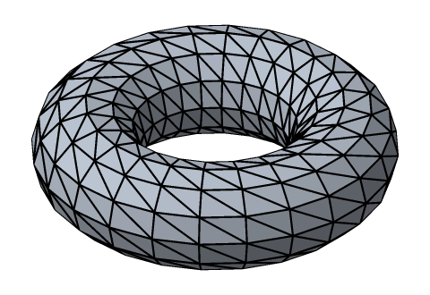
Triangle mesh
the most common
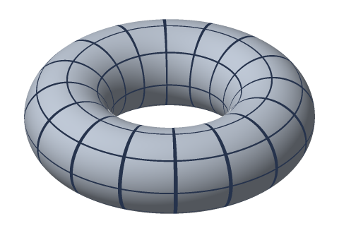
Parametric surface
(u , v ) ↦ (x , y , z )
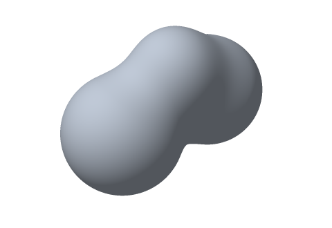
Implicit surface
f (x , y , z ) = 0
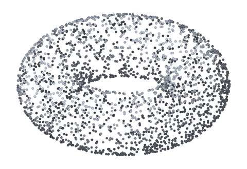
Point cloud
samples of the surface
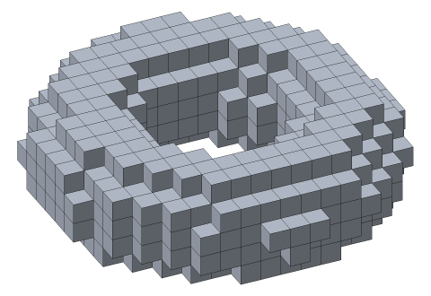
Voxels
a 3D grid of cells
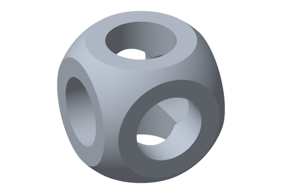
Constructive solid geometry
(cube ∩ sphere) − cylinders
Most representations describe the surface of an object, since that is what we see. Some describe the solid, its inside as well.
Triangle mesh: the surface approximated by flat triangles. By far the most common, and what GPUs draw. The next slide is about meshes.
Parametric surface: a function from two parameters to 3D points, (u, v) ↦ (x, y, z). The curves drawn on the torus are the curves of constant u and of constant v. For this torus, x = (R + r cos v) cos u, y = r sin v, z = (R + r cos v) sin u. The surface is smooth and exact, not an approximation. Design programs use patches of polynomial surfaces of this kind (Bézier and spline patches).
Implicit surface: the points where a function f(x, y, z) is zero, with f < 0 inside and f > 0 outside. Testing whether a point is inside is a single evaluation, and shapes blend into each other easily: here three spheres merge into one smooth surface. The torus is also an implicit surface: (√(x² + z²) − R)² + y² − r² = 0.
Point cloud: points sampled on the surface, with no connections between them. This is what 3D scanners and depth cameras produce.
Voxels: a 3D grid of cells, each inside or outside, or holding a value such as a density. It is a 3D image, and the natural output of CT and MRI scanners. Memory grows with the cube of the resolution.
Constructive solid geometry: solids built from simple ones by union, intersection and difference. Here: a cube intersected with a sphere, minus three cylinders along the axes. Common in mechanical design.
Rasterization draws triangles, so other representations are converted to meshes before rendering. Ray tracing (week 12) can intersect many of them directly.
Triangle Meshes
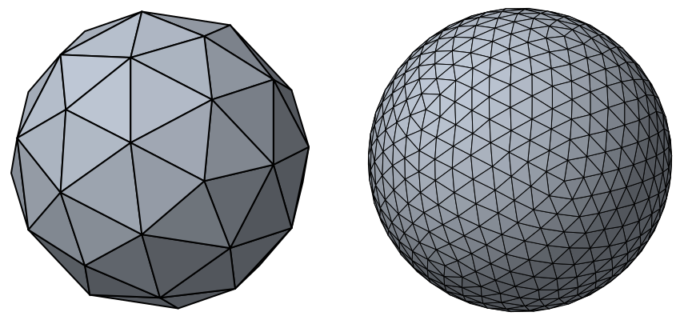
80 triangles
1280 triangles
An object is represented by its surface, approximated by a mesh of triangles
A list of vertices: 3D points
A list of triangles: each is three indices into the vertex list
Neighboring triangles share vertices and edges
vertices = [(x0, y0, z0), (x1, y1, z1), (x2, y2, z2), ...]
triangles = [(0, 1, 2), (0, 2, 3), ...]
For rendering, an object is described by its boundary surface: what we see is the surface, not the inside. The surface is approximated by a mesh of triangles: the more triangles, the closer the approximation, and the less visible the facets.
A mesh is stored as two lists. The vertex list holds each 3D point once. The triangle list refers to the vertices by their index in that list, so a vertex shared by six triangles is stored, and transformed, only once. The order of the three indices also fixes the orientation of the triangle, which we will use for back-face culling.
Vertices carry more than positions: a normal, a color, texture coordinates. These are the attributes that we interpolate across each triangle later today.
Why triangles? Three points always lie in a plane, a triangle is always convex, any polygon can be split into triangles, and the barycentric coordinates of week 2 interpolate across a triangle. Besides points and lines, triangles are the only thing a GPU draws.
From Triangles to Pixels
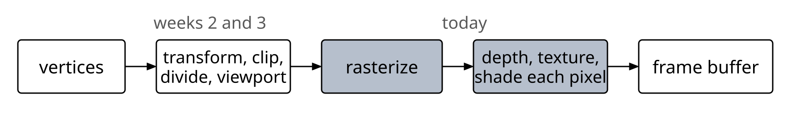
Which pixels does each triangle cover?
Which surface is visible at each pixel?
What color is it? Texture today, light next week
In weeks 2 and 3 we took each vertex from object coordinates to raster coordinates, keeping its depth. Now we discuss what happens next: how to compute the image, one pixel at a time.
Today has two parts: rasterization and visibility (which pixels, and which surface), and texture mapping (the first half of what color). Next week is light and shading, the second half.
Visible-Surface Algorithms
Given a set of 3D objects and a viewing specification, determine which surfaces of the objects should be visible
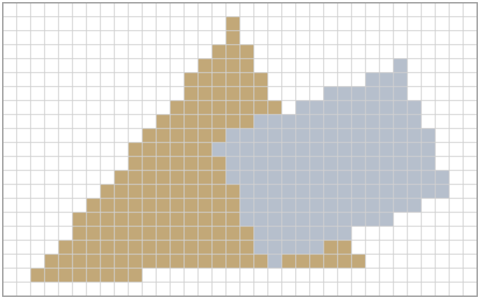
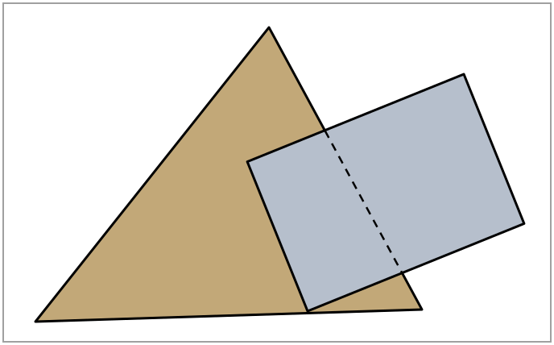
Image precision
what is visible at each pixel?
Object precision
which parts of each object are visible?
There are several names by which these algorithms are commonly referred to: visible-line determination, visible-surface determination, hidden-line or hidden-surface removal.
Image-precision: for each pixel in the image, determine which part of which object is pierced by the projector closest to the viewer, and assign the pixel the appropriate color. These algorithms were motivated by raster devices.
Object-precision: for each object, determine which parts are unobstructed by itself or by other objects, and scan-convert these parts using the appropriate color. The advantage is independence from the resolution: it is easy to change the resolution of the image once the visible parts have been determined.
The figures show the same two surfaces, the gray quad in front of the tan triangle, solved both ways. Left: each pixel takes the color of the nearest surface at its center; the answer is a set of pixels, with staircase edges, and a different resolution means solving again. Right: the visible part of the triangle is computed as exact geometry, and its hidden edges (dashed) are removed; the result can then be drawn at any resolution.
Ray Casting
For each pixel, generate the ray from the center of projection through the pixel
To find the surface visible through the pixel:
Intersect the ray with all surfaces in the scene
Keep the intersection closest to the center of projection
Works with any representation we can intersect with a ray
Complexity: O(pN ) , for p N
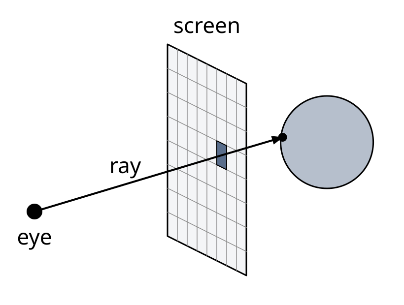
Ray casting shows that the visible-surface problem is a sorting problem: sorting surfaces along all possible lines of sight.
Ray casting needs only one operation from the scene: intersect a ray with a primitive. So it works directly with any representation that supports it: triangles, but also spheres and other implicit surfaces, parametric patches, voxel grids and CSG solids, with no conversion to triangles.
It is simple, and rather slow as it stands. It loops over the pixels, of which there are many, and for each pixel it intersects a ray with possibly all of the objects, of which there are also many. It does not use any coherence between neighboring pixels.
In week 12 we extend this algorithm to ray tracing, and see how to make it more efficient.
The Same Problem, Loops Exchanged
Ray casting
Rasterization
for each pixel:
make the ray through the pixel
for each triangle in the scene:
intersect it with the ray
if the hit is closest so far:
keep it
for each triangle in the scene:
project it onto the screen
for each pixel it covers:
if it is the closest so far:
keep it
Both find, at each pixel, the nearest surface
Rasterization only visits the pixels each triangle covers, and one triangle at a time is all it needs in memory
What is the complexity of rasterization?
Both loops do the same work in the same two nested dimensions, pixels and triangles. Only the order differs.
In the worst case, with every triangle covering every pixel, both are O(pN). The difference is in the typical case. Most triangles of a modern scene cover few pixels, and the rasterizer's work is the total number of pixels covered, summed over the triangles. That is p times the average number of surfaces stacked behind a pixel, which is usually small. Ray casting without further acceleration still tests every triangle at every pixel.
The price: the inner loop needs to remember, at each pixel, the closest surface so far, which is the z-buffer, coming up. And since the rasterizer sees one triangle at a time, effects that need other objects (shadows, reflections) are hard for it and natural for ray tracing.
The Inside Test
Eab Ebc Eca all three
A pixel is covered when its center is inside the triangle
The edge function of edge ab
Eab = 0a b p Inside: all three edge functions have the same sign
The 2D cross product (b − a) × (p − a) = (b_x − a_x)(p_y − a_y) − (b_y − a_y)(p_x − a_x). Multiplied out, with p = (x, y), it is Ax + By + C with A = a_y − b_y, B = b_x − a_x and C = a_x b_y − a_y b_x: the implicit equation of the line through a and b, zero on the line, positive on one side, negative on the other. The three coefficients are fixed for the edge, which the next slide uses. The name edge function is from Pineda (1988).
A triangle is the intersection of three half-planes, so a point is inside exactly when it is on the inner side of all three lines. For a counterclockwise triangle all three functions are then positive; for a clockwise one, all negative.
Demo: drag a, b, c and p. The buttons show the half-plane of each edge function, with arrows for its two vectors (blue: the edge, b − a; red: the point, p − a), and all three together, which leaves the pixels whose centers are inside. Note that a pixel is either covered or not: a pixel with only a corner in the triangle is not drawn. We come back to this when we discuss antialiasing.
Where is the pixel center? Pixel (i, j) is the square [i, i+1] × [j, j+1] of the screen, so its center, where we sample, is (i + ½, j + ½). The edge functions work at any point; the convention matters for agreeing with the rest of the pipeline. With it, a rectangle from (0, 0) to (10, 10) covers exactly 10 × 10 pixels, its area, and no sample falls on its boundary. Sampling at integer points would put samples exactly on all four of its edges, and the tie rule would decide between 10 and 11 pixels in each direction. Textures use the same convention for texel centers. When Direct3D 9 put pixel centers at integers while OpenGL used half-integers, programs ported between the two came out shifted by half a pixel; Direct3D 10 adopted the half-integer convention.
The Rasterization Loop
for each pixel center p = (x + 0.5, y + 0.5) in the bounding box:
if E_ab(p), E_bc(p), E_ca(p) all have the same sign:
draw pixel (x, y)
Each edge function is linear in x y
So a whole block of pixels can be evaluated at once
This is how GPUs work: many pixels in parallel, not one by one
Since E is linear in x and y, E_ab(x, y) = A x + B y + C with coefficients computed once per triangle. Early hardware used this to step along scan lines: moving one pixel to the right just adds a constant, E(x + 1, y) = E(x, y) − (b_y − a_y).
Modern GPUs use the same linearity differently. They evaluate the functions over a block of pixels at once, by adding fixed offsets to one value, and they can test a tile's corners to accept or reject the whole tile. In the recitation you do the same thing in NumPy, evaluating E over a whole grid of pixels with one array expression.
The loop on the slide is the definition. Real rasterizers differ in how they organize the same computation.
The loop visits the pixels whose centers lie in the bounding box.
Shared Edges
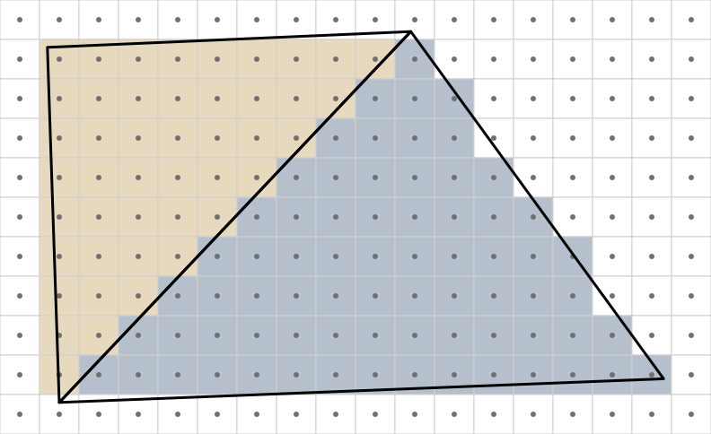
Meshes are made of triangles that share edges
The two triangles see the same edge function, with opposite signs
So each pixel center belongs to exactly one of them: no gaps, no double drawing
A center exactly on the edge needs a tie-break
For a shared edge, the neighboring triangle traverses it in the opposite direction, so E_ba(p) = −E_ab(p). A pixel center is on one side or the other, and belongs to that triangle only. This matters for meshes: a gap would show the background through the surface, and a pixel drawn twice would be visible with transparency.
The exception is a center lying exactly on the edge, where E = 0. Rasterizers break the tie with a fixed rule, usually called the top-left rule: a pixel on an edge is drawn only if that edge is a top or a left edge of the triangle.
The alternative of drawing the edges with a line algorithm and filling between them does not have this property: it colors pixels whose centers are outside the triangle, and neighboring triangles overlap.
Barycentric Coordinates
Inside the triangle: all three are positive
Each is a ratio of areas, and E
The same three numbers give the inside test and the weights
These are the weights of the point p as a combination of the vertices, the affine combination of week 2. E_ab(p) is twice the signed area of the triangle a, b, p, so γ is the area of the small triangle opposite c, as a fraction of the whole. Move p to c: γ becomes 1, and the other two 0.
They are computed at no extra cost, since the inside test has already computed the three edge functions. Dividing by A gives the weights, and their signs are the inside test.
Demo: drag p and the vertices. Each small triangle's area is the weight of the opposite vertex. Move p outside the triangle: one of the weights becomes negative.
Interpolating Attributes
Vertices carry attributes: color, texture coordinates, normals, depth
Between the vertices, weigh them:
Linear on the screen
Is this the right thing to do?
This is what a rasterizer does at each pixel it covers: compute α, β and γ, and combine the vertices' values. The figure interpolates three vertex colors.
Next week the same mechanism gives Gouraud and Phong shading, by interpolating colors or normals.
Demo: drag the vertices. On a flat 2D triangle this is exactly right. It is not right for a triangle that recedes from the eye, as the next slides show.
Equal Steps on the Screen
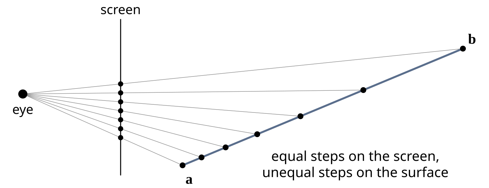
Halfway between a b
Perspective projection preserves straight lines but not ratios along them: it maps lines to lines, but it does not preserve the midpoint. Equal steps on the screen correspond to larger and larger steps on the surface as it recedes. So a quantity that varies linearly along the surface does not vary linearly on the screen.
Barycentric coordinates computed on the screen are the weights of the projected triangle. They are not the weights of the same point on the 3D triangle.
The Artifact
Linear on the screen
Perspective-correct
Computed live: the same square, two triangles, with the same texture coordinates at its four corners. On the left, the coordinates are interpolated with the screen's barycentric coordinates. The checkerboard bends along the diagonal shared by the two triangles, because each triangle is correct at its own three vertices only. On the right, the correction of the next slide.
Demo: with no tilt the two agree, since all vertices are at the same depth. Tilt the square: the bend grows. Early game consoles without the correction (the PlayStation 1 is the well-known case) showed this wobbling of textures.
Perspective-Correct Interpolation
An attribute linear over the triangle is a linear function of the clip coordinates:
Divide by w x /w , y /w
The same for f = 11/w is linear on the screen too. So interpolate both, and divide:
Why does the first line hold? The three vertices of the triangle, as (x, y, w) in clip coordinates, are three linearly independent vectors (unless the triangle is seen exactly edge-on). So there is exactly one linear function k₁x + k₂y + k₃w taking the prescribed values f_a, f_b, f_c at the vertices, and since the points of the triangle are combinations of its vertices, it gives the attribute everywhere on the triangle.
Dividing by w turns x and y into the screen coordinates and leaves a function that is linear on the screen: this is the whole trick. So f/w can be interpolated with the barycentric coordinates computed on the screen, and so can 1/w, the special case f = 1. Their ratio recovers f.
Here w is the fourth clip coordinate; with the projection matrix of week 3, w = −z_eye, the distance along the viewing direction. This is why the graphics pipeline keeps w around after the projection.
Check at a vertex: at p = a we have α = 1, and the formula gives (f_a/w_a)/(1/w_a) = f_a. If all three w are equal, it reduces to the plain interpolation of the previous slides. It is always done by the GPU; you implement it in the recitation.
Depth Needs No Correction
The same argument for f = z clip z ndc = z clip /w
Planes stay planes after the projection (week 3): Ax + By + Cz + D = 0
This holds for z ndc z eye
So the z values that the projection matrix computed have a useful property, on top of the monotonicity we saw in week 3: they are linear on the screen, so they can be interpolated directly and cheaply, with no division.
Traditionally this was done incrementally along scan lines: at (x + 1, y), z′ = −(A(x + 1) + By + D)/C = z − A/C. Since A/C is constant for the plane, one subtraction per pixel suffices, and going to the next scan line subtracts B/C. The depth is linear in x and y either way. That is the essential fact, and today's hardware uses it by evaluating blocks of pixels at once.
Be careful about which z: it has to be the one after the projection. Since 1/z_eye is linear on the screen, z_eye itself is not, and this is another view of the same nonlinearity we plotted in week 3: z_ndc = (f + n)/(f − n) + 2fn/((f − n) z_eye), a linear function of 1/z_eye.
Back-Face Culling
In a closed surface, polygons facing away from the viewer are always hidden, and can be eliminated
Back-face test, for V
On the screen: the sign of A
This solves visibility for a certain class of objects. Which one?
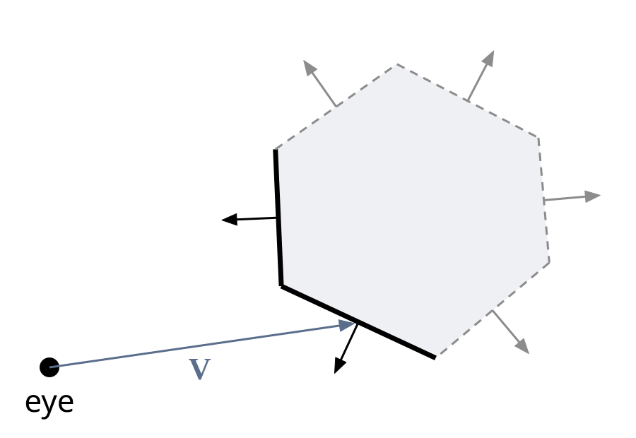
Why it is worth doing: about half of the polygons of a closed object face away, so culling removes half of the work before any pixel is touched.
Under perspective, V depends on the polygon: it runs from the eye to a point of the polygon, and it is not a single viewing direction. After the projection the view is parallel, along the z axis of normalized device coordinates (which points away from the eye), so there it is enough to look at the sign of the z component of the normal. Equivalently, and this is what a GPU does: the sign of the signed area A of the projected triangle tells its winding on the screen, counterclockwise or clockwise. It has already been computed for the inside test. This relies on the meshes being modeled with consistent winding.
Answer to the question: convex objects. For a single convex object, every front face is entirely visible, so back-face culling alone solves the problem. For anything else it is only a first step.
The Z-Buffer Algorithm (Catmull 1974)
In addition to the frame buffer, keep a z-buffer of the same size
Invariants:
Each z-buffer pixel holds the depth of the nearest surface drawn so far through that pixel
Each frame buffer pixel holds the color of that surface
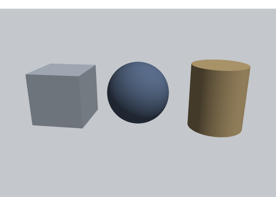
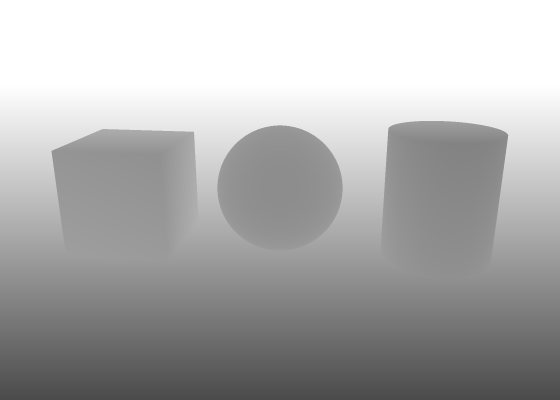
frame buffer
z-buffer
The z-buffer lets us process one geometric element at a time, doing an amount of work proportional to the number of pixels the element covers. It does not need to compare objects with one another: it only compares each new surface with what is already at the pixel. It was described independently by Catmull and by Straßer in 1974.
The images are computed: a small ray caster gave the scene and its z_ndc values, with near and far planes around the scene.
The Z-Buffer Algorithm
set every pixel of the frame buffer to the background
set every pixel of the z-buffer to the far plane
for each triangle, in any order:
for each pixel (x, y) it covers:
z = α z_a + β z_b + γ z_c
if z < zbuffer(x, y):
zbuffer(x, y) = z
framebuffer(x, y) = color at (x, y)
The order of the triangles does not matter
Each pixel is a comparison and at most two writes
With z_ndc in [−1, 1], the near plane has −1 and the far plane +1, so a smaller value means nearer and the buffer starts at 1. (The value actually stored is usually rescaled to [0, 1] by the viewport transformation.)
Where does the color computation take place? As written, for every pixel that passes the depth test, even if it is overwritten later by something nearer. GPUs commonly test depth before shading, to avoid shading what is already hidden (early z). Many game engines go further with deferred shading: they first run all the geometry to find the visible surface at each pixel, and then shade each pixel just once.
The Z-Buffer, Step by Step
frame buffer
z-buffer (near is dark)
A, B, C C, B, A B, C, A
Computed live, with big pixels so you can see them. Triangles A (light), B (dark) and C (tan) go in one per step (arrow keys); A and B cross each other. The depth is interpolated across each triangle, and the panel on the right shows it.
Demo: try the other orders with the buttons. The partial pictures differ, the final one does not. Note the boundary where A and B cross: no polygon has an edge there. It appears by itself, pixel by pixel, with no need to split the triangles. An algorithm that orders whole polygons cannot do this.
The Z-Buffer Algorithm
Advantages:
Simple to implement, in software and in hardware
Handles intersecting surfaces with no special cases
Separately rendered images can be composited using their z-buffers
Disadvantages:
Requires extra memory (not so much of a problem anymore)
Finite depth precision can cause problems
May spend time on polygons that are not visible in the image
What is the complexity of the z-buffer algorithm? The work per polygon is proportional to the number of pixels it covers on the screen, so the total is the sum of the covered pixels over all polygons. In the worst case, with every polygon covering the whole screen, this is O(pN), the same as ray casting. In practice polygons are small, and the sum is p times the average number of surfaces behind a pixel. That number, the depth complexity, is what the last disadvantage is about: pixels that get overwritten are wasted work. The price of the algorithm is paid per pixel covered, not per pixel times polygon.
Transparency is another limitation: a single depth per pixel cannot represent a stack of translucent surfaces. We return to this at the end of the lecture.
Z-Fighting
Two parallel walls, 24-bit depth values
Bring the near plane out first
Back to the plot of the nonlinear z mapping from week 3. A depth buffer stores a finite number of values, here 2²⁴. Because of the nonlinearity most of them are spent close to the eye, and at distance d two surfaces closer than about Δd round to the same value and can no longer be told apart. The result is z-fighting: bands of the far surface showing through the near one, and flickering as the camera moves.
The figure is computed with the actual quantization: the back wall (red) is drawn first, and the front wall (light stripes) replaces it only where its stored depth is strictly smaller. The readout gives both numbers at distance 500: a depth difference smaller than the depth step cannot be resolved. (The walls are 0.03 apart. Seen at a grazing angle, their depths along a line of sight differ by more than that.)
Demo: with the near plane at 0.1 the far part of the wall breaks into red bands. Move n to the right: the bands disappear. Now move the far plane: it hardly changes the depth step, as long as f ≫ n (it only clips the wall). The formula says why: for f ≫ n, Δd ≈ 2⁻²⁴ d²/n, inversely proportional to n and independent of f. So set the near plane as far from the eye as the scene allows.
Other remedies: avoid truly coplanar surfaces, or give one surface a small depth offset (a polygon offset), the usual approach for decals. Many engines today store depth reversed, in floating point, which spreads the precision much more evenly.
List-Priority Algorithms
Determine an ordering of the objects such that drawing them in that order gives a correct picture
Example: painter’s algorithm . If all of the polygons are sorted by depth, drawing them back to front gives the correct result
Question: does a depth ordering always exist?
These are object-precision methods: they work with the polygons, not with the pixels. Each polygon drawn overwrites what is behind it, like a painter who paints the far objects first. No depth buffer is needed.
The idea returns at the end of this lecture: translucent surfaces have to be drawn back to front, even on a GPU with a z-buffer.
Depth Ordering
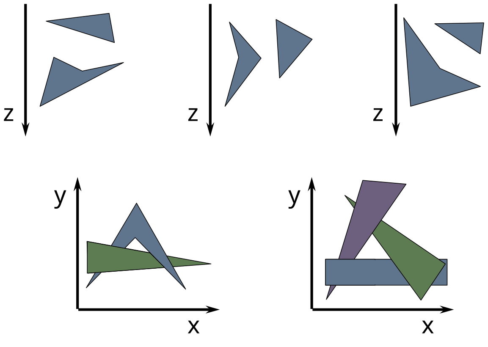
In the three top examples, there is a valid depth ordering (with the projection parallel to the z axis). On the left, the extents of the two polygons along the z axis are disjoint, so they can be sorted unambiguously. In the middle, the z extents overlap, but the x extents do not, so the projections are disjoint. Neither can be classified as nearer than the other, and that is no problem: we can draw them in any order we like. On the right, both the z extents and the projections overlap. However, there is a plane that separates the two polygons. The polygon on the same side of that plane as the eye cannot possibly be occluded by the one on the other side, so we can define a correct order.
In the two bottom cases no depth ordering is possible: the polygons interpenetrate, or they occlude each other in a cycle. The solution is to split some of the polygons involved, to reduce the situation to one of the top cases.
Planar Separation Principle
Let V H A H V B
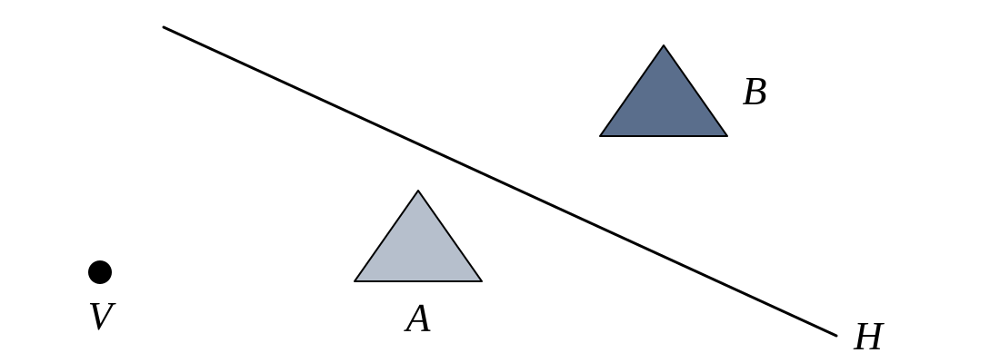
So: draw the far side of H V
If H(V) > 0, then no object A with H(A) > 0 can be occluded by an object B with H(B) < 0. If H(V) < 0, the same holds with the signs exchanged. A line of sight from V reaching A stays on V's side of H, since a line crosses a plane just once, so it cannot meet B.
The important thing: this order is decided by one sign, the side of H on which the viewpoint lies. Moving the viewpoint does not require re-sorting anything else.
The BSP Tree
BSP = binary space partitioning
Each tree node corresponds to a convex region of space, and interior nodes hold a plane that splits the region in two
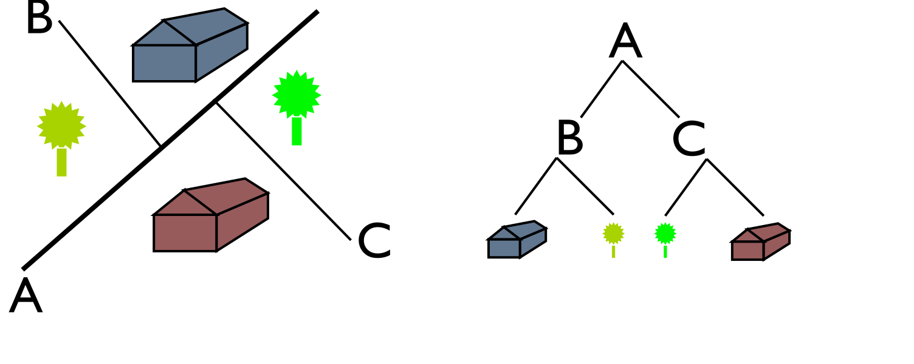
Optional.
A general n-dimensional BSP tree is a binary tree whose nodes correspond to subregions (possibly unbounded) of the space. Each interior node is associated with a hyperplane subdividing the node's region into two half-spaces, and each of its two children corresponds to one of them. So the leaves correspond to convex regions, the intersection of all the half-spaces along the path from the root to the leaf.
Let H be the plane at a node, with the viewpoint V in its front half-space. By the planar separation principle, every object in the back subtree can come before the objects in the front subtree in a back-to-front order. This suggests a divide-and-conquer way of generating a depth-ordered list of polygons, for any viewpoint.
BSP-Tree Painter’s Algorithm
Construct (auto-partition):
Pick a polygon; its plane is the root
Make two lists: the polygons in front of it and behind it, splitting those that cross it
Recurse on the two lists
Display: traverse back to front, from the viewpoint, drawing as you go
Back2Front(node, viewpoint):
if node is empty: return
if viewpoint is in front of
node.plane:
Back2Front(node.back, viewpoint)
draw node.polygon
Back2Front(node.front, viewpoint)
else:
Back2Front(node.front, viewpoint)
draw node.polygon
Back2Front(node.back, viewpoint)
Optional.
This particular type of BSP tree, where the splitting plane is always the supporting plane of a scene polygon, is called an auto-partition BSP tree. It is also possible to build a BSP tree with arbitrarily chosen planes.
Once the tree is built, a simple traversal is all it takes to get a depth ordering, and it works for any viewpoint, so a static scene needs just one tree. This made BSP trees popular in early games, such as Doom. Each polygon is drawn at its own node, between the two subtrees.
Complexity: because of the splitting, the size of the BSP tree, and consequently the time to traverse it, can unfortunately be O(n²) for n polygons in 3D.
BSP-Tree Construction
Optional. A top view, with polygons as segments. Arrow keys add one node per step.
Polygon 1 becomes the root. Its line crosses a long segment, which is split in two: the parts become 3 and 6, to be handled separately. The label of each polygon is written on its + side. In the − half-space polygon 2 becomes the root of the subtree, and in the + half-space polygon 3. Each subtree then continues in the same way.
BSP-Tree Traversal
Optional.
Demo: the arrow keys step through the traversal. The red arrow points at the current node, and its line is highlighted in the scene. At each node the traversal asks on which side of the line the eye is, and goes to the far side first. When it comes back, it draws the node's polygon (painted in the scene, and added to the order), and then goes to the near side. Empty subtrees are marked with the ground symbol.
Drag the eye at any step: the tree does not change, only the order does. Compare the order with the picture: a polygon listed later may cover one listed earlier, never the reverse.
The direction the camera looks in does not matter here, only its position.
Texture Mapping
the texture, with (u , v
the surface, on the screen
Store (u , v ) at each vertex, interpolate them with the perspective correction, and look up a texel
A texture adds detail to a surface without adding geometry: bricks on a wall need no extra triangles for each brick. A pixel of a texture is called a texel, to tell it apart from a pixel of the screen. Color is only one use: the same mechanism can store other material properties, as we will see.
Each vertex of the mesh gets texture coordinates (u, v), usually in [0, 1]². This parameterization is usually made by an artist, or an unwrapping tool. For a pixel of a triangle, (u, v) is interpolated with the perspective-correct formula, which is exactly the problem we have just solved, and then used to look up the texture.
Demo: computed live. Drag the corners of the house on the texture on the left: the house on the right is unchanged in shape, but it shows the new part of the texture. Moving a corner stretches the texture across its triangles.
Coordinates outside [0, 1] are handled by a wrap mode: repeat (tiling), or clamp to the edge.
Projection Mappings
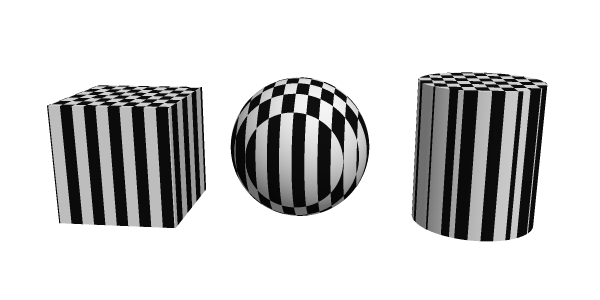
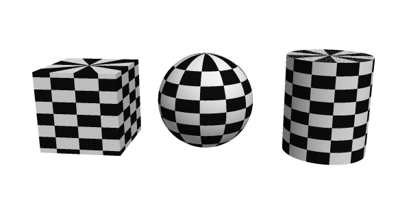
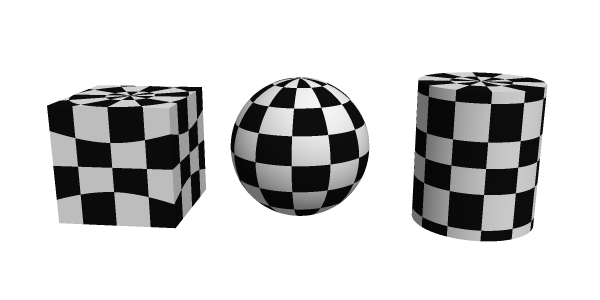
Planar
Cylindrical
Spherical
When there are no stored coordinates: compute (u , v ) from the 3D position
Optional.
Instead of storing (u, v) at each vertex, compute it from the position, by projecting onto an intermediate surface whose parameterization is known. In the images, coordinates are relative to each object's center, and the planar and cylindrical mappings have been shifted to put that center in the middle of the texture. These are the same mappings used for world maps; each stretches the texture where the surface is not parallel to the projection surface.
Look at the box in the planar mapping: its sides, parallel to the projection direction, get streaks. The sphere in the spherical mapping has its texture pinched at the poles; a cylinder or a sphere needs a seam where θ jumps from π to −π, and interpolating u across the seam makes the whole texture appear backward in one column of triangles.
The images are computed: a small ray caster finds the point of the object at each pixel, and the formula gives its (u, v).
Cube Maps
the six faces, unfolded
sphere
torus
blob
A texture on each face of a cube around the object
Look up by the direction d
The largest |di | picks the face; the other two, divided by it, give (u , v )
No poles, no seams
A cube map stores six square textures, one on each face of a cube centered at the object. To find the texture at a surface point p, take the direction d = p − c from the center c, and follow it out to the cube: the component of d with the largest magnitude says which face it hits, and dividing the other two components by it gives coordinates from −1 to 1 on that face, which we map to (u, v) from 0 to 1. The equation shows the +x face: seen from outside, its u axis points along −z and its v axis along y.
Compared with a spherical mapping, there is no pole where the texture is pinched, and no seam where a coordinate jumps. The distortion is bounded: a texel at a corner of a face covers a smaller solid angle than one in the middle, by a factor of 3^(3/2) ≈ 5. The grid lines continue across the edges of the cube, so the six faces join without a break.
Demo: drag the object to turn it; the texture turns with it. The buttons change the object. Any object can use a cube map, since all it needs is a direction from the center; on the torus, the directions from the center pass through the hole, so the inner side of the ring takes the same faces as the outer side behind it.
GPUs support cube maps directly: the lookup takes a 3D direction, and the hardware picks the face and filters within it. In week 12 we meet the same lookup for a different purpose: storing the light that arrives from every direction, an environment map.
Magnification
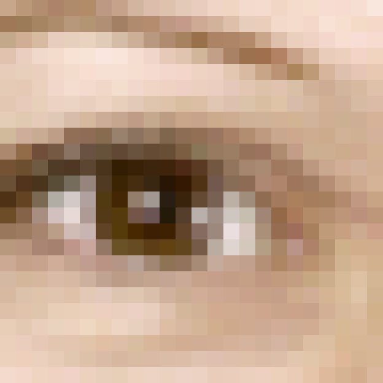
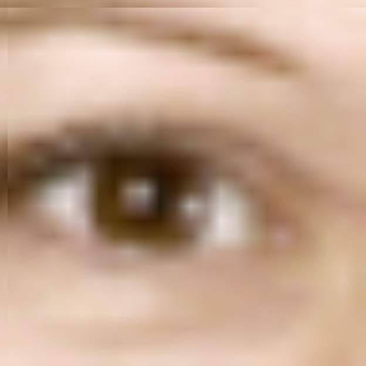
Nearest neighbor
Bilinear
One texel covers many pixels
Interpolate (week 2)
Bilinear: between the four nearest texels, by the fractions a , b
A lookup almost never lands exactly on a texel, so we need an interpolation in any case. In magnification, when the surface is near the camera, each texel covers many pixels. This is the reconstruction problem of week 2, with the same answers: nearest neighbor gives blocks, and bilinear gives a smooth but blurry result. Here a and b are the fractional parts of the position between the four nearest texels, with texel centers at half-integers. GPUs do bilinear filtering in hardware; bicubic is usually left to a shader.
More resolution cannot be created by interpolating, of course. Magnified textures look blurry, which is why games keep several levels of detail.
Minification: the Pixel’s Footprint
the screen (drag the marker)
the texture, around that point
One pixel covers many texels
Now the opposite case. A pixel is a small square on the screen, and its preimage on the surface, in the texture, is a quadrilateral: the footprint. Near the eye it is smaller than a texel (magnification). Far away it covers many texels (minification). The color the pixel should have is the average of the texture over the footprint, and looking up one point is a poor approximation of it.
Demo: drag the marker. The red square on the left marks one pixel, and the panel on the right shows the part of the texture around that point, with the pixel's footprint in red. Note how it gets longer and thinner toward the horizon: the view is oblique, so it is much longer in one direction than the other. We come back to this at the end.
The Sampling Problem Again
Point sampling Bilinear Mipmap
A pixel samples the texture once every ρ
Texture details finer than 2ρ texels are above the Nyquist rate: they alias (week 6)
Bilinear doesn’t help: it still looks at only 4 texels
The cure: low-pass filter first, then sample
This is the sampling problem of week 6, in a new setting. The texture is the signal, and the pixels are samples of it at a spacing of ρ texels. When the spacing is greater than one texel, the texture contains frequencies above the Nyquist rate of this sampling, and they alias. We see the classical moiré on the receding checkerboard, and in an animation, heavy shimmering. Aliasing already begins as soon as the texture is reduced at all, if it has detail at the level of a texel.
Bilinear interpolation is a good reconstruction filter for magnification, but it is not a low-pass filter for reduction. For ρ much greater than 2, it mixes four neighboring texels out of very many that fall in the footprint.
The cure is the same as in week 6: low-pass filter the signal to remove the frequencies that cannot be represented, before sampling. The difficulty here is that ρ is different at each pixel, and we have only a few nanoseconds per pixel. Computing the average over the footprint explicitly is too expensive.
Demo: the three buttons compare the methods; the third one is explained in the next slides. This is computed live per pixel on a checkerboard texture of 256 × 256 texels.
Mipmapping: the Gaussian Pyramid with a Job
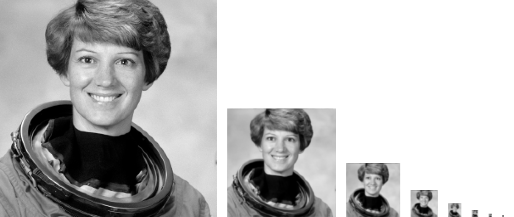
Precompute the texture low-pass filtered at all scales
At run time, one lookup, in the right level
Extra memory: only ⅓
Mip = multum in parvo , “much in little” (Williams 1983)
You built this in the week 6 recitation: each level is the previous one low-pass filtered and subsampled by 2. At level ℓ, one texel summarizes 2^ℓ × 2^ℓ texels of the original. So a low-pass filter that would be very expensive per pixel becomes one lookup, with all the work done in advance, one time per texture.
The storage is just a third more than the texture itself, by the geometric series on the slide.
GPUs and graphics libraries often build the levels with the simplest filter, averaging 2 × 2 blocks of texels. A Gaussian-like filter gives better quality, and the principle is the same. The pyramid is computed once, before rendering, usually from the texture in a linear space (more about that next week).
Level Selection
Levels One level Two levels
Choose the level where a pixel covers one texel
(s , t ) : texture coordinates in texelsLevel too fine: aliasing
Level too coarse: blur
ρ is the length of the longer side of the footprint, measured in texels. GPUs get the derivatives by subtracting (s, t) at neighboring pixels, which is why they process pixels in 2 × 2 blocks. The level is log₂ρ: at level λ, a texel is ρ original texels wide, so a pixel covers one texel. For λ < 0 we are magnifying, and level 0 is used.
Demo: "Levels" paints each level in its own color, so you see the rings of the levels around the eye. The slider biases the level. Move it to the left, finer than the formula says: the aliasing comes back. To the right, coarser: everything becomes blurrier.
The "One level" button shows the lines where the selected level changes. The next slide removes them.
Trilinear Filtering
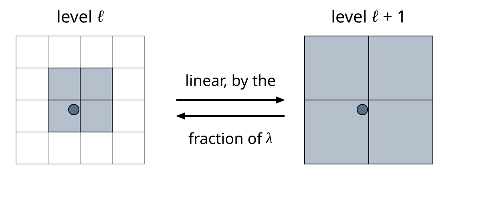
λ ℓ = ⌊λ ⌋ℓ + 1Linear in s t λ
With one level, the filter jumps by a factor of 2 where the level changes, and the jump shows as a line across the surface, which moves with the camera. Trilinear filtering removes it: a bilinear lookup in each of the two levels, then a linear interpolation between them by the fractional part of λ. Trilinear is a standard feature of every GPU.
You can compare on the previous slide, with the "One level" and "Two levels" buttons.
Anisotropic Filtering
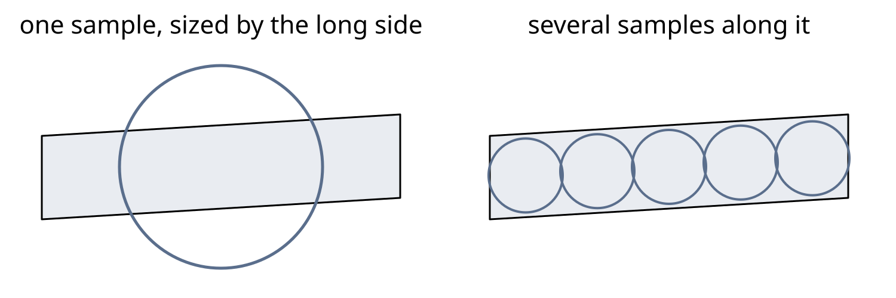
An oblique view gives a long, thin footprint
A level sized by its long side over-blurs the short one
Anisotropic filtering: several lookups along the long side, at a finer level
A mipmap filters by the same amount in both directions, while the footprint on an oblique surface can be many times longer than it is wide. The level is chosen for the long side, to avoid aliasing, so the short direction is over-blurred. That is why the far part of the floor in the demo fades to gray much too early.
GPUs solve this with anisotropic filtering: the level comes from the short side of the footprint, and several trilinear lookups, up to 16, are averaged along the long side. It costs up to 16 times as many lookups, only where the footprint is long.
We only mention it here. It is available as a single setting in every graphics API.
Antialiasing Rendered Edges
1 sample 4 samples 16 samples
The pixel-center rule samples the triangle at one point per pixel
An edge is a step: infinite frequencies, so aliasing is inevitable
Supersampling : several samples per pixel, averagedThe pixel’s value is its coverage , a fraction
Week 6 once more. The binary inside test is point sampling of a signal with a step edge, whose spectrum has no upper limit. The result is the staircase pattern: jaggies. Texture filtering cannot help, since the edge is in the geometry and not in the texture.
The direct approach is supersampling: take n × n samples per pixel, and average. This approximates a box filter over the pixel. The cost is proportional to the number of samples if the color is computed at each one. GPUs therefore use multisampling (MSAA): coverage and depth are tested at each sample, and the color is computed once per pixel. So edges get the benefit, at a small cost. In the demo, the value of each pixel is the fraction of its samples inside the triangle.
Demo: compare the three settings; drag the vertices. Nearly horizontal and nearly vertical edges show the staircase most clearly. The result is a pixel partially covered, with a fractional coverage. To combine this with what lies behind, we need the next slide.
Alpha Compositing
Back to front Front to back
A fourth channel α
The over operator (Porter and Duff 1984):
The order matters, so the z-buffer alone is not enough
Draw opaque surfaces first, then translucent ones sorted back to front
The same equation covers two different physical situations: a fractional coverage of the pixel, as at an antialiased edge, and a truly translucent surface, like glass or smoke. F is the foreground color, B is what is behind it. It is a linear interpolation between the two colors, and it is not commutative: F over B is not B over F.
For a stack of layers, the over operator is applied repeatedly, and the correct order is back to front. Here the painter's algorithm comes back, on GPUs with a z-buffer, for translucent surfaces. The usual recipe: first draw all opaque surfaces with the depth test on. Then sort the translucent ones, and draw them back to front, with the depth test on and writing to the z-buffer off.
Why not just rely on the z-buffer? It keeps one depth per pixel. Demo: the red triangle is opaque and behind; the blue one is in front, and translucent. With "Front to back" the blue triangle is drawn first and writes its depth, so the red one fails the depth test where they overlap: behind the blue triangle we see the checkerboard instead of red. Drawn back to front, the result is right. The slider changes the α of the blue triangle.
A note on the form: storing the color premultiplied by α, F′ = αF, makes the operator simpler, C′ = F′ + (1 − α)B′, and it is what libraries normally do. The over operator is due to Porter and Duff (1984).